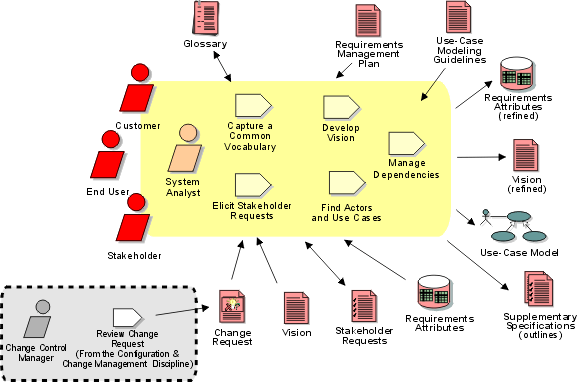

Disciplines >
Disciplines >
 Requirements >
Requirements >
 Workflow >
Understand Stakeholder Needs
Workflow >
Understand Stakeholder Needs
Disciplines >
Requirements >
Workflow >
Understand Stakeholder Needs
Workflow Detail:
|
Topics |
 |
The purpose of this workflow detail is to collect and elicit information from the stakeholders of the project in order to understand what their needs really are. The collected stakeholder requests can be regarded as a "wish list" that will be used as primary input to defining the high-level features of our system, as described in the Vision, which drive the specification of the software requirements, as described in the use-case model, use cases and supplementary specifications.
Typically, this activity is mainly performed during iterations in the inception and elaboration phases, however stakeholder requests should be gathered throughout the project by using Change Requests following the Change Request Management Process.
The key activity is to elicit stakeholder requests using such input as business rules, enhancement requests, interviews and requirements workshops. The primary outputs are collection(s) of prioritized features and their critical attributes, which will be used in defining the system and managing the scope of the system.
This information results in a refinement of the Vision document, as well as a better understanding of the requirements attributes. Also, during this workflow detail you may start discussing the functional requirements of the system in terms of its use cases and actors. Those non-functional requirements, which do not fit easily into the use-case model, should be documented in the Supplementary Specifications.
Another important output is an updated Glossary of terms to facilitate common vocabulary among team members.
The project members involved in understanding stakeholder needs should be efficient facilitators and have experience in eliciting information. Of course, familiarity with the targeted technology is desirable, but it is not essential.
The following are sample techniques that can be applied to make sure you collect the correct and relevant information from the stakeholders:
See also:
|
Rational Unified
Process
|